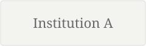
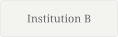

BibTeX
@misc{replaceCitationKey,
title = {Replace with the exact paper title},
author = {Replace with the exact author list},
year = {Replace with publication year},
url = {Replace with the paper URL}
}@misc{replaceCitationKey,
title = {Replace with the exact paper title},
author = {Replace with the exact author list},
year = {Replace with publication year},
url = {Replace with the paper URL}
}
